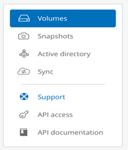
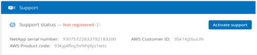
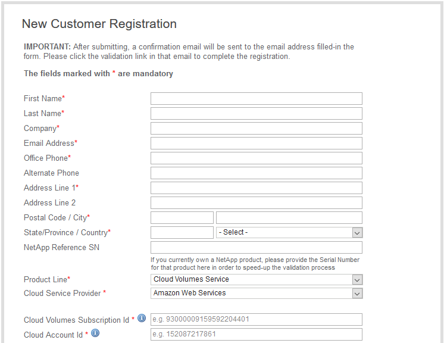
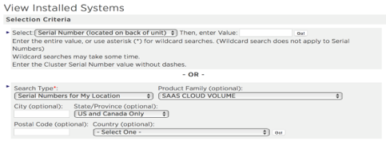

激活支持授权并访问支持
提供者
订阅 AWS Marketplace 后不久即可访问 Cloud Volumes Service 后，强烈建议您激活支持授权。激活支持授权后，您可以通过在线聊天， Web 服务单系统和电话访问技术支持。
在序列号激活和注册完成之前，默认支持级别为自助服务。
正在激活支持授权
在 Cloud Volumes Service for AWS 的初始订阅过程中，您的云卷实例将生成一个 20 位数的 NetApp 序列号，此序列号以 "9y" 开头。NetApp 序列号表示与您的 AWS 帐户关联的 Cloud Volumes Service 订阅。您必须注册 NetApp 序列号才能激活支持授权。我们提供 2 种支持注册选项：
-
使用现有 NetApp 支持站点（ NSS ） SSO 帐户的当前 NetApp 客户
-
新的 NetApp 客户，没有现有的 NetApp 支持站点（ NSS ） SSO 帐户
选项 1 ：使用现有 NetApp 支持站点（ NSS ） SSO 帐户的当前 NetApp 客户
-
导航到 Cloud Volumes Service URL ，或通过访问此服务 "NetApp Cloud Central 门户"。然后使用您的 NetApp Cloud Central 凭据登录。
-
在 Cloud Volumes Service 用户界面（ UI ）中选择 "* 支持 " 以显示您的 NetApp 序列号。

-
在 "**Support" 页面中，验证您的支持状态是否显示
Not Registered。
如果您未看到支持状态和 NetApp 序列号，请刷新浏览器页面。
-
单击 "* 激活支持 "* 以注册您的 NetApp 序列号：
-
如果您有 NSS 帐户，请在 "* 激活支持 " 页面中输入您的 NSS 凭据（用户名和密码），然后单击 "* 激活 " 以激活您的 NetApp 序列号的支持授权。

-
如果您是现有 NetApp 客户，但没有 NSS SSO 凭据，请转到 "NetApp 支持注册站点" 以先创建帐户。然后返回此处以向您的 NSS 凭据注册。
-
如果您是 NetApp 的新客户，请参见下面选项 2 的说明。
-
激活 NetApp 序列号后， "**Support" 页面将显示状态 Registered ，表示您已激活支持授权。

这是对适用 Cloud Volumes Service 序列号的一次性支持注册。任何新的 Cloud Volumes Service 订阅以及后续的新序列号也需要激活支持。如果您对支持注册有任何疑问或问题，请发送电子邮件至 cvs-support@netapp.com 与我们联系。
选项 2 ：新的 NetApp 客户，没有现有的 NetApp 支持站点（ NSS ） SSO 帐户
-
导航到 "云数据服务支持注册" 页面以创建 NSS 帐户。
-
选择 "我 不是 NetApp 注册客户 "* ，此时将显示 " 新客户注册表 " 。

-
在表单上填写所需信息：
-
输入您的姓名和公司信息。
-
选择 "* Cloud Volumes Service WebServices"* 作为产品线，选择 "* WebServices"* 作为云服务提供商。
-
在接下来的两个字段中输入 "NetApp 序列号 " 和 "AWS 客户 ID" （ Cloud Volumes Service ）的 "Support" （支持）页面。
-
单击 "* 提交注册 "* 。
-
-
您将收到一封来自已提交注册的确认电子邮件。如果未发生错误，系统将重新定向到 " 已成功提交注册 " 页面。您还将在一小时内收到一封电子邮件，指出 " 您的产品现在有资格获得支持 " 。
-
作为 NetApp 的新客户，您还需要创建一个 NetApp 支持站点（ NSS ）用户帐户，以供将来激活支持以及访问支持门户以进行技术支持聊天和 Web 服务单。转至 "NetApp 支持注册站点" 以执行此任务。您可以提供新注册的 Cloud Volumes Service 序列号以加快此过程。
这是对适用 Cloud Volumes Service 序列号的一次性支持注册。任何新的 Cloud Volumes Service 订阅以及后续的新序列号也需要激活支持。如果您对支持注册有任何疑问或问题，请发送电子邮件至 cvs-support@netapp.com 与我们联系。
获取支持信息
NetApp 通过多种方式为 Cloud Volumes Service 提供支持。全天候提供广泛的免费自助支持选项，例如知识库（ KB ）文章或 NetApp 社区。从 AWS SaaS 市场购买的 Cloud Volumes Service 订阅包括通过聊天，电子邮件， Web 服务单或电话提供的远程技术支持。要使用这些非自助服务支持选项，您必须先为每个 NetApp 序列号激活支持。聊天和 Web 服务单以及案例管理需要使用 NetApp 支持站点（ NSS ） SSO 帐户。
通过从主菜单中选择 "**Support" 选项卡，您可以从 Cloud Volumes Service UI 访问支持选项。您可以使用的支持选项取决于您是处于试用模式还是订阅模式。

自助支持
这些选项在试用模式下可用，并且全天候免费提供：
-
"知识库"选择本节中的链接将转到 NetApp 知识库，您可以在其中搜索与 Cloud Volumes Service 相关的文章，操作说明，常见问题解答或故障修复信息。
-
"用户手册"选择 "* 单击此处 "* 链接将转到 Cloud Volumes Service for AWS 文档中心。
-
"社区"选择 "* 单击此处 "* 链接将转到 Cloud Volumes Service 社区，您可以在此与同行和专家建立联系。
-
通过电子邮件选择 " 反馈 " 部分中的 "* 单击此处 "* 链接将启动一封通过 cvs-support@netapp.com 发送给支持部门的电子邮件。这是一个很好的地方，可以询问有关服务的一般问题，提供反馈和建议，或者就与入职相关的问题寻求帮助。
订阅支持
除了上述自助支持选项之外，如果您订阅了 Cloud Volumes Service 付费订阅，则可以与 NetApp 支持工程师合作解决任何问题。
激活 Cloud Volumes Service 序列号后，您可以通过以下任一方法访问 NetApp 技术支持资源。要使用这些支持选项，您必须订阅有效的 Cloud Volumes 。
您也可以通过单击来申请销售支持 "联系销售人员" 链接。
您的 Cloud Volumes Service 序列号可通过支持菜单选项显示在服务中。如果您在访问服务时遇到问题，并且先前已向 NetApp 注册序列号，您可以联系 cvs-support@netapp.com 以获得帮助。您也可以从 NetApp 支持站点查看 Cloud Volumes Service 序列号列表，如下所示：
-
从 "Products" （产品） >"My Products" （我的产品）菜单选项卡中，选择 "Product Family （产品系列） "*SaaS Cloud Volume" （ SaaS Cloud Volumes" ）以找到您注册的所有序列号：

 请求文档变更
请求文档变更 在 GitHub 上编辑
在 GitHub 上编辑 提供者指南
提供者指南